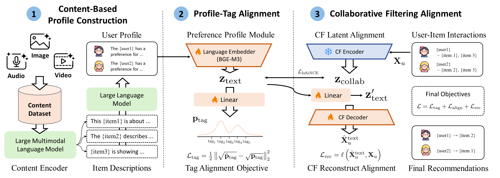

Controllable and Content-Based Recommendations
Abstract
Traditional recommendation systems rely on latent (dense) representations, making them difficult to interpret and control. We propose the Controllable Content-Based Recommendations (CCBR) framework, which builds its recommendations from textual user profile representations. CCBR plugs into collaborative filtering models and introduces controllability via text bottlenecks. We show that CCBR enables text-based and multimodal interventions, allowing users to steer the model towards the directions they prefer. Different from existing controllable recommendation systems, CCBR infers the text summaries directly from item contents (images, audio or videos). Across image-, audio-, and video-based datasets, we demonstrate that the proposed framework obtains competitive model performance with standard (latent-representation) models while providing controllable model summaries via text. The model also outperforms a controllable recommendation system baseline. Through systematic interventions, we also demonstrate the efficacy of the user steering mechanism.
Method Overview

Overview of the CCBR pipeline. Item-level content (images, audio, or video) is first verbalized into natural-language descriptions by a multimodal language model (Large Multimodal Language Model), and a text-only LLM then aggregates each user's interacted items into a textual preference profile (Stage 1: Content-Based Profile Construction). The profile is encoded by a trainable language embedder (BGE-M3) and a linear projection head, and trained with a tag-alignment objective (Stage 2: Profile-Tag Alignment). This text-side representation is aligned with the user latent from a frozen collaborative filtering backbone via an InfoNCE objective, and the CF decoder is reused to score candidate items (Stage 3: Collaborative Filtering Alignment).
Contributions
We propose CCBR, a framework that introduces controllability to a given collaborative filtering model in a content-driven, multimodal way through a text-based, editable user summary. Unlike prior controllable systems, CCBR derives user profiles directly from raw item content (images, audio, video) without relying on predefined concepts or metadata.
We demonstrate that, despite adding controllability, CCBR does not significantly deteriorate recommendation performance across several popular collaborative filtering backbones (EASE, EDLAE, DAE, Multi-DAE, Multi-VAE, MacridVAE), and outperforms a controllable recommendation system baseline.
We show that CCBR can steer recommendations by incorporating previously unseen multimodal inputs, enabling users to actively guide the system toward their current preferences through systematic text-based or multimodal interventions.
BibTeX
@article{anonymous2026ccbr,
title = {Controllable and Content-Based Recommendations},
author = {Anonymous Author(s)},
booktitle = {Advances in Neural Information Processing Systems},
year = {2026},
note = {Under review. Do not distribute.}
}